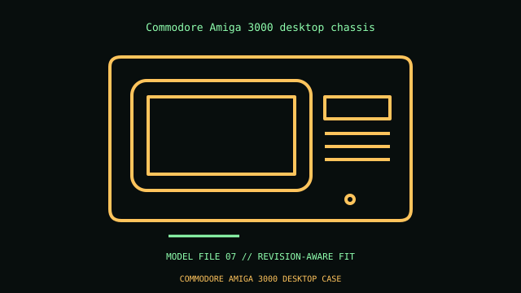

[ IDENTIFIED ENCLOSURE // VINTAGE DESKTOP AND PORTABLE SYSTEMS ]
Commodore Amiga 3000 desktop chassis
Approximately 435 × 140 × 400 mm W×H×D desktop chassis. Proprietary A3000 board, Zorro III slots and PSU; not ATX. Full-height cards use specific case/backplane clearances.

VARIANT / ARCHIVAL CAVEAT: A3000 and A3000T differ in chassis, PSU and backplane. Preserve drive carrier, shielding, SCSI harness and revision-matched board.
Mechanical specifications and fit
| Catalog identity / revision | Commodore Amiga 3000 desktop chassis |
|---|---|
| Dimensions / construction | Approximately 435 × 140 × 400 mm W×H×D desktop chassis. |
| Drive bays / storage | Two front 3.5-inch positions, one internal 3.5-inch bay; extra SCSI mounts vary. |
| Board, system and compatibility | Proprietary A3000 board, Zorro III slots and PSU; not ATX. Full-height cards use specific case/backplane clearances. |
| Revision / service note | A3000 and A3000T differ in chassis, PSU and backplane. Preserve drive carrier, shielding, SCSI harness and revision-matched board. |
Preservation and installation notes
Match the case and all internal assemblies by model suffix and board/drive revision; do not substitute visually similar generations.
- Photograph the complete model label, assembly revision and option identifiers before opening; keep matching covers, brackets, shields, trays and fasteners together.
- Before energizing any restored unit, check the period service procedure, insulation and PSU condition. A CRT system can retain hazardous voltage; use a qualified technician for CRT service.
Manufacturer manuals and model-specific sources
- Commodore Amiga 3000 desktop chassis manual and service documentationModel-specific manufacturer specification, owner/service manual or technical reference; verify exact model and revision.
Where normalized dimensions or option-specific limits are not published, the record states that limitation rather than asserting a generic fit. Verify the cited manual revision against the specimen.